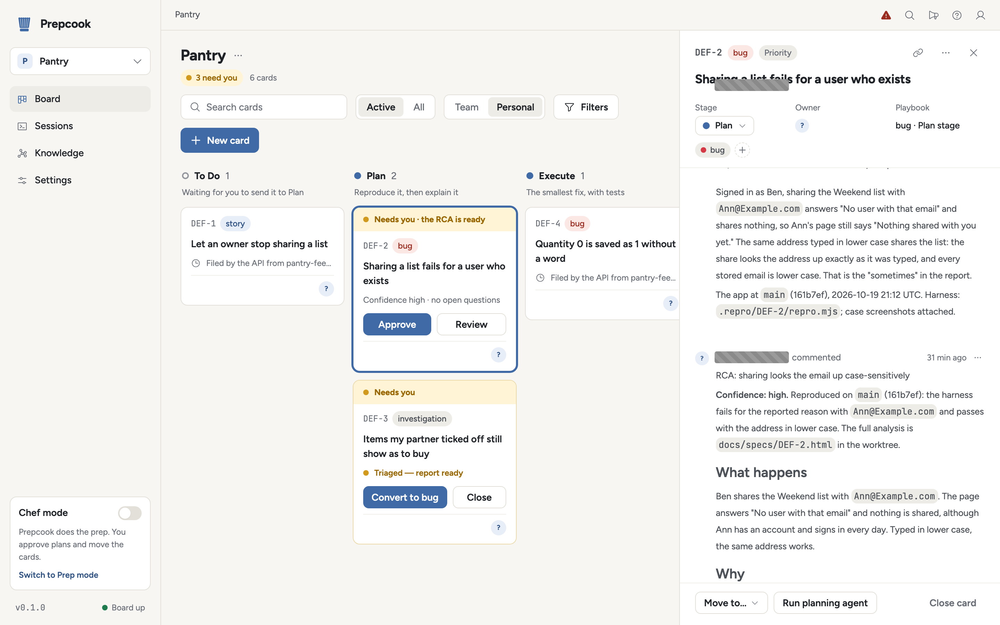

Bug report in. Reviewed pull request out. You sign off.
npx prepcook upAbout 20 minutes of your time on the Pantry demo. The four steps
The board at work
Pantry
2 need you 8 cardsPrepcook reproduces each bug before it explains it, then fixes it and has the fix reviewed by an agent that never saw the plan, each step a coding agent in its own git worktree. You approve the explanation and merge the result.
The board above is a simulation: the Pantry demo's own bugs and a few more like them, with times compressed.
The simulation shows Pantry bug cards moving across the Plan, Execute, Review and Shipped columns. In Chef mode a person moves each card and approves each root-cause analysis; in Prep mode cards move themselves and plans at high confidence approve themselves. In both, a person merges and cleans up, and the count of open bugs falls as pull requests merge.
Every column has something to prove
The order is fixed, and each step is a separate agent in its own worktree. A card cannot skip ahead: a fix waits for an approved explanation, and the explanation waits for a reproduction.
-
Plan
The bug happens, for the reported reason.
The app is stood up in the card's worktree and a harness makes the failure happen. Only then is the root-cause analysis written, with its confidence.
-
Execute
The smallest change turns the harness green.
A new session fixes the mechanism the analysis isolated, adds regression tests and commits on a branch rebased onto the target. Nothing is pushed.
-
Review
The fix holds up to eyes that never saw the plan.
A separate agent reviews the diff and the reproduction in a fresh worktree. Its findings go back to the implementing agent for up to three rounds.
-
Shipped
A pull request a person can merge.
The branch is pushed and the pull request opened, the reproduction as its first comment. Review comments on it go back to the implementing agent.
-
Clean up
Nothing left behind but what was learned.
The clean-up script runs and the worktrees are archived. The approved analysis stays in the knowledge store.
Nothing merges without a person
The root-cause analysis says what happens, why, and how sure it
is. You approve it in Lavish, the review page each plan opens in,
or by commenting APPROVE on the card.
Prepcook works your tickets; you move the cards and approve each plan.
Cards move themselves. A plan at high confidence approves itself; one below the bar is escalated to Slack and waits for a person.
A person merges. An engineer who assigns the ticket to themselves takes it over, and Prepcook steps aside.

It remembers, and it knows when to step aside
A graph of root causes
Every approved analysis goes into a knowledge store, linked by product area, component and cause. A cause that keeps coming back stops being a coincidence: it opens a pattern review of its own.
The knowledge graph-
Investigations before bugs
An investigation card runs Plan exactly as a bug does, posts a triage report and stops until a person converts it to a bug or closes it. Incidents mode opens one per incident.
Investigations and incidents -
Works alongside people
It answers on a ticket only when it is its turn, takes plan decisions only from listed approvers, and files a follow-up rather than reopening a fix that did not hold.
Working alongside people
- Tickets
- Jira, GitHub Issues, PagerDuty incidents, or none: the card can be the only record.
- Evidence
- Sentry, DataSet, Datadog, CloudWatch Logs, log files.
- Notifications
- Slack, Discord, Microsoft Teams, a signed webhook.
- Agents
- Claude Code, Amp, Gemini CLI, Codex, OpenCode, Cursor Agent, Qwen Code, GitHub Copilot CLI, Droid, chosen per stage.
Tammy sits in your support channel in Slack, answers from your docs, and files an investigation card when something looks broken, then tells the customer what was found in plain English.
Meet TammyRun one bug through it this afternoon
The quickstart takes a real bug in Pantry, a small demo app, from report to pull request with no tracker. About 20 minutes of your time, plus the agents' 30 to 60.
-
About 10 minutes
Install and startThe board runs locally in Docker; there is nothing to sign in to.
-
About 5 minutes
Add the demo repositoryFork prepcook-demo and run Test stand-up until it reads ok.
-
5, then 10 to 20 waiting
PlanFile the bug, drag it to Plan, read the reproduction and approve the RCA.
-
5, then 15 to 30 waiting
Execute to ShippedReview, open the pull request on your fork, merge, clean up.
npx prepcook upOpen source under Apache 2.0, and already working a real team's bug queue.